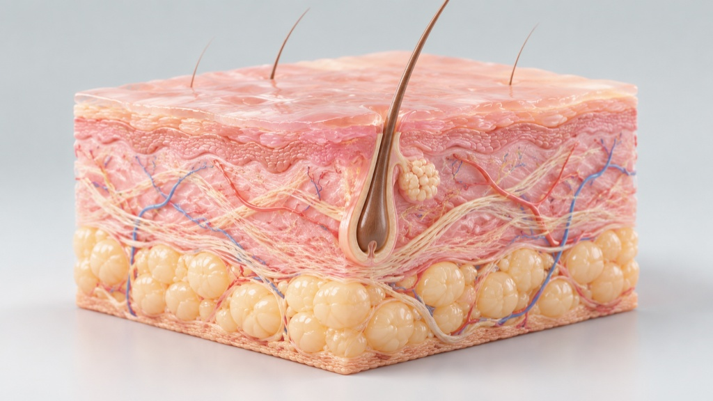

Кожа как орган: слои, обновление и защитный барьер
Кожа удерживает воду внутри организма, принимает на себя механическую нагрузку, сдерживает микробы и ультрафиолет, регулирует теплообмен и распознаёт прикосновения. Разница в устройстве эпидермиса, дермы и подкожной жировой клетчатки прямо определяет, где заканчиваются возможности домашнего крема и начинается зона ответственности врачебных процедур.
Коротко о главном
- Три связанных яруса ткани. В строгом анатомическом смысле кожа включает эпидермис и дерму, а лежащая глубже гиподерма тесно связана с ними сосудами, нервами и соединительнотканными перегородками.
- Эпидермис питается за счёт диффузии. В наружном слое нет кровеносных сосудов: кислород и питательные вещества поступают сюда из капиллярных петель дермы, однако в толщу эпителия заходят свободные чувствительные нервные волокна.
- Схема из пяти слоёв зависит от зоны. Все пять уровней эпидермиса видны в толстой коже ладоней и подошв, тогда как на лице блестящий слой отсутствует, а цикл смены клеток отклоняется от книжных 28 дней.
- Наружные средства работают избирательно. Базовый крем укрепляет роговой барьер и не восполняет глубокий объём тканей, но отдельные лекарственные молекулы (например, наружный третиноин) доказанно влияют на синтез проколлагена в дерме [1].
Анатомия: три яруса и разные задачи
У взрослого человека площадь кожного покрова достигает 1,5–2 м² в зависимости от роста и массы тела. Помимо барьерной защиты, этот орган ведёт непрерывный иммунный надзор, синтезирует витамин D под действием ультрафиолета, отводит лишнее тепло и передаёт в мозг сигналы боли, холода и прикосновения. Расположенная глубже жировая клетчатка служит энергетическим запасом, смягчает удары и вырабатывает сигнальные молекулы.

| Уровень | Основные структуры | Что делает этот слой |
|---|---|---|
| Эпидермис | Кератиноциты, меланоциты, иммунные клетки Лангерганса и осязательные клетки Меркеля | Удерживает влагу, блокирует внешние раздражители и патогены, синтезирует пигмент меланин и воспринимает поверхностные сигналы |
| Дерма | Коллагеновые и эластические волокна, фибробласты, кровеносные и лимфатические сосуды, нервы, фолликулы и железы | Держит механическую нагрузку, возвращает ткань к исходной форме, питает эпидермис и отводит тепло |
| Гиподерма | Адипоциты в жировых дольках, соединительнотканные перегородки (септы), крупные сосуды и нервные стволы | Амортизирует удары, сохраняет тепло, формирует рельеф и плавную подвижность мягких тканей лица |
Откуда происходят клетки кожи
Кератиноциты эпидермиса развиваются из поверхностной эктодермы (наружного зародышевого листка). Бо́льшая часть дермы туловища формируется из мезодермы, однако соединительная ткань лица и передней части шеи берёт начало преимущественно из клеток нервного гребня. Из этого же нервного гребня мигрируют пигментные клетки меланоциты, тогда как клетки Лангерганса приходят из костномозговой иммунной линии. По этой причине один анатомический слой объединяет клетки разного эмбрионального происхождения.
Эпидермис: пять уровней и смена клеток
Эпидермис построен как многослойный плоский ороговевающий эпителий. Основную массу его клеток составляют кератиноциты: они делятся на базальной мембране, постепенно продвигаются вверх, меняют внутреннюю структуру и на выходе превращаются в корнеоциты (плоские безъядерные чешуйки рогового слоя).
| Слой (снизу вверх) | Клеточные процессы и анатомические особенности |
|---|---|
| Базальный | Клетки-предшественники делятся на базальной мембране; рядом расположены меланоциты и тактильные клетки Меркеля |
| Шиповатый | Кератиноциты скрепляются прочными межклеточными контактами (десмосомами); в надбазальных рядах дежурят отростчатые клетки Лангерганса |
| Зернистый | Клетки накапливают гранулы кератогиалина и выбрасывают из ламеллярных телец липиды, которые герметизируют межклеточные промежутки |
| Блестящий | Хорошо различим в толстой коже ладоней и подошв; в тонкой коже лица этот промежуточный ряд отсутствует |
| Роговой | Плоские корнеоциты окружены многослойными липидными пластами; по мере распада белковых связок верхние чешуйки незаметно слущиваются |
Почему «28 дней» служат лишь ориентиром
Деление базальных клеток, их созревание, подъём к поверхности и отшелушивание идут непрерывно, но с разной скоростью. Учебная цифра в 28 дней даёт лишь грубый средний ориентир для молодой здоровой кожи. На практике длительность цикла зависит от возраста пациента, участка тела, целостности барьера и сопутствующих дерматозов. Определить на глаз точную дату рождения поверхностных клеток невозможно.
Как устроен защитный барьер
В роговом слое корнеоциты работают как прочные белковые «кирпичи», а межклеточные липиды (церамиды, холестерин и свободные жирные кислоты) уложены между ними упорядоченными пластами наподобие «цемента». Внутри самих роговых чешуек молекулы натурального увлажняющего фактора (NMF) притягивают и связывают воду. Если агрессивное умывание, сухой воздух или воспаление повреждают липидные пласты, трансэпидермальная потеря воды (испарение влаги сквозь кожу) возрастает, а пациент чувствует сухость, стянутость и жжение. Подробно устройство рогового слоя мы разбираем в отдельном материале «Эпидермис и барьер кожи».
Что могут наружные средства
Роговой барьер жёстко фильтрует внешние вещества, но не создаёт абсолютно глухую стену. Глубина проникновения зависит от молекулярной массы и липофильности вещества, его концентрации, химической основы препарата и сохранности самого эпидермиса. Липосомы и транспортные носители помогают стабилизировать формулу, однако не протаскивают любую крупную молекулу сквозь дерму.
| Группа средств | Реалистичная задача | Где проходит граница метода |
|---|---|---|
| Эмоленты и базовые кремы | Восполняют липиды рогового слоя, удерживают воду и смягчают мелкую сетку линий обезвоженности | Не возвращают утраченный объём жировых пакетов и костной опоры |
| Солнцезащитные препараты | Снижают дозу ультрафиолета и тормозят разрушение коллагенового каркаса при регулярном нанесении | Не подтягивают уже сместившиеся мягкие ткани лица |
| Наружные ретиноиды | Перестраивают клеточное обновление; для рецептурного третиноина 0,05% доказано сглаживание признаков фотостарения и рост маркеров синтеза проколлагена [1] | Требуют месяцев регулярного курса, контроля раздражения и исключения противопоказаний |
| Сыворотки с гиалуроновой кислотой | Создают на поверхности влажную воздухопроницаемую плёнку и временно разглаживают микрорельеф | Не заменяют внутрикожные или глубокие инъекции филлеров |
Результаты двухлетнего рандомизированного клинического исследования третиноина 0,05% опровергают миф о том, будто наружные препараты вообще не способны повлиять на дермальный матрикс [1]. Вместе с тем переносить доказанное действие рецептурного ретиноида на любой косметический крем с пептидами или растительными экстрактами некорректно.
Дерма: опорный каркас и питание
| Этаж дермы | Устройство ткани | Ключевая задача |
|---|---|---|
| Сосочковый слой | Рыхлая соединительная ткань, тонкие пучки коллагена, капиллярные петли и тактильные тельца | Питает эпидермис через волнистую базальную мембрану и скрепляет оба слоя между собой |
| Сетчатый слой | Плотная неоформленная соединительная ткань с толстыми пучками коллагена и упругой эластической сетью | Держит механическое натяжение и определяет прочность кожи на разрыв |
Коллагеновые пучки удерживают ткань от избыточного растяжения, а эластические волокна возвращают её на место после мимического сдвига или нажатия. Пространство между волокнами заполнено гелеобразным внеклеточным матриксом: гиалуроновой кислотой, протеогликанами и гликопротеинами. Упругость дермы зависит как от водного баланса этого геля, так и от пространственной сборки белковых волокон.
Фибробласты синтезируют и обновляют компоненты матрикса на всех уровнях дермы. Молекулярные исследования показывают, что популяции фибробластов сосочкового слоя, сетчатой дермы и дермально-гиподермального перехода различаются по профилю активности [2]. Помимо них в дерме работают эндотелиоциты сосудов, макрофаги, тучные клетки и лимфоциты. Чувствительные рецепторы распределены по этажам: в верхних сосочках безволосой кожи лежат тельца Мейснера, а глубже располагаются слоистые тельца Пачини, реагирующие на вибрацию и глубокое давление. Подробному разбору дермального каркаса посвящена вторая часть базовой серии.
Гиподерма: жировые пакеты и перегородки
Жировые клетки (адипоциты) собраны в дольки, которые оплетены соединительнотканными перегородками (септами) с проходящими внутри сосудами и нервами. На лице подкожный жир разделён на поверхностные и глубокие жировые компартменты, между которыми проходит мышечно-апоневротическая система (SMAS) и удерживающие связки. Шаблонной схемы из трёх одинаковых жировых слоёв для всех зон лица не существует.
Чёткость контуров лица складывается из состояния всех ярусов: кожи, жировых пакетов, связочного аппарата, мимических мышц и костного лицевого скелета. Сводить возрастные изменения овала только к «растяжению септ» или только к сухости кожи ошибочно.

- Периорбитальная область (веки): предельно тонкая кожа, под которой обычно нет поверхностного подкожного жира, а глубокий внутриорбитальный жир отделён глазничной перегородкой.
- Скуловая и щёчная область: развитые поверхностные и глубокие жировые компартменты формируют основной рельеф и объём средней трети лица.
- Лоб и свод черепа: плотная послойная система кожи, тонкой клетчатки и лобного брюшка с сухожильным шлемом без крупных глубоких жировых депо.
Кровоснабжение: два сосудистых контура

Кровь поступает в кожу через два сообщающихся яруса. Глубокое сосудистое сплетение залегает на границе сетчатой дермы и подкожной клетчатки. От него вверх поднимаются вертикальные сосуды к поверхностному подсосочковому сплетению, а из последнего в каждый дермальный сосочек заходят тонкие капиллярные петли. Через их стенку кислород и глюкоза диффундируют сквозь базальную мембрану к живым слоям бессосудистого эпидермиса.
Интенсивность кожного кровотока регулирует отдачу тепла и оттенок лица, а параллельная сеть лимфатических капилляров дренирует межклеточную жидкость. Волосяные фолликулы, потовые и сальные железы оплетены собственными сосудистыми и нервными сетями, что влияет на скорость заживления кожи после аппаратных шлифовок и пилингов.
Капля крови («кровавая роса») в точке вкола говорит лишь о том, что кончик иглы задел сосуд. По этому признаку нельзя надёжно судить о точной глубине инъекции или гарантировать безопасность введения препарата (подробнее в четвёртой части серии).
Практический смысл: диагноз важнее глубины
| Клиническая задача | Целевой анатомический ярус | Рациональные инструменты и ограничения |
|---|---|---|
| Сухость, шелушение и срыв барьера | Роговой слой и живые ряды эпидермиса | Корнеотерапия, мягкое очищение, отмена раздражителей и лечение фонового дерматоза |
| Дисхромия и фотоповреждение | Эпидермис, а при смешанном пигменте и верхняя дерма | Круглогодичная фотозащита, наружные препараты; лазерные и световые методики только после дерматоскопии |
| Снижение плотности и мелкие заломы | Сосочковая и сетчатая дерма | Наружные ретиноиды, инъекционная и аппаратная стимуляция коллагена по показаниям без обещаний хирургической подтяжки |
| Дефицит объёма и гравитационное смещение | Жировые пакеты, связки и костная опора | Очная послойная диагностика; контурная пластика, аппаратный SMAS-лифтинг или хирургия решают разные задачи |
Врач выбирает глубину работы исходя из диагноза, физики конкретного аппарата, инструкции к препарату и анатомии зоны, а не ради абстрактного «омоложения глубокого слоя». Грамотный домашний уход за эпидермисом не конкурирует с клиническими процедурами, а создаёт для них здоровую барьерную среду.
Реабилитация: норма и тревожные сигналы
Сроки и внешние проявления восстановления зависят от глубины и способа вмешательства. Если какого-то симптома нет в таблице ниже, но реакция тканей вызывает тревогу, покажитесь врачу очно.
| Ожидаемая физиологическая реакция | Повод немедленно связаться с врачом |
|---|---|
| Умеренная краснота и чувствительность, которые стихают в стандартные для методики сроки | Нарастающая или пульсирующая боль, расползающееся горячее покраснение, гнойное отделяемое или лихорадка |
| Небольшой локальный синяк в точке прокола | Резкое побледнение, мраморно-синюшная сетка (ливедо) или похолодание кожи, особенно после введения филлера [3] |
| Умеренный локальный отёк с ежедневным спадом | Стремительно растущий отёк лица; при отёке губ, языка, гортани или нехватке воздуха вызывайте скорую помощь |
| Ясное зрение и сохранная чувствительность лица | Любое затуманивание или выпадение зрения, двоение, онемение, перекос лица или сбой речи требуют экстренной госпитализации [3] |
После любой инвазивной процедуры врач выдаёт письменную памятку по домашнему режиму. Пока роговой барьер заживает, кожу очищают мягкими средствами без сульфатов, наносят назначенный восстанавливающий крем и закрывают от солнца, а кислоты, скрабы и ретиноиды временно убирают. Самостоятельно массировать, греть или мазать места инъекций случайными мазями нельзя. При малейшем подозрении на сосудистую ишемию счёт идёт на часы: ждать «пока пройдёт само» опасно [3].
Частые вопросы пациентов (FAQ)
Правда ли, что в эпидермисе нет нервов?
Нет. В эпидермисе нет кровеносных сосудов, однако сюда заходят свободные нервные волокна, которые передают сигналы боли, зуда и температуры. С базальными клетками Меркеля контактируют механорецепторы тонкого осязания, поэтому даже поверхностная травма рогового барьера вызывает жжение и резкую реакцию на воду или крем.
Может ли крем улучшить состояние дермы?
Результат зависит от молекулы. Для наружного рецептурного третиноина 0,05% двухлетнее рандомизированное исследование подтвердило способность сглаживать клинические признаки фотостарения и повышать синтез проколлагена в дерме [1]. Переносить этот эффект на любую косметическую сыворотку нельзя, а глубокий дефицит жирового или костного объёма наружные средства не восполняют.
Всегда ли кожа полностью обновляется за 28 дней?
Нет. Двадцать восемь дней служат лишь усреднённым учебным ориентиром для эпидермиса молодого человека. Скорость клеточного цикла меняется с возрастом, зависит от анатомической зоны, целостности липидного барьера и кожных болезней: при псориазе клетки проходят путь к поверхности в несколько раз быстрее, а с годами темп смены роговых чешуек замедляется.
Почему для век и щёк выбирают разные методики?
Эти зоны различаются толщиной дермы, глубиной сосудистых сетей, ходом мимических мышц и устройством жировой ткани: на веках кожа предельно тонкая, а поверхностный подкожный жир обычно отсутствует. Врач подбирает препарат, параметры аппарата и глубину работы отдельно для каждой анатомической области.
Источники
- Kang S. et al. Application of retinol to human skin in vivo induces epidermal hyperplasia and cellular retinoid binding proteins characteristic of retinoic acid but without measurable retinoic acid levels or irritation // рандомизированное двухлетнее клиническое исследование третиноина 0,05% при фотоповреждении кожи (PubMed: 16060712).
- Молекулярные и функциональные различия популяций фибробластов сосочковой, сетчатой дермы и дермально-гиподермального перехода кожи человека (PMC7072412).
- U.S. Food and Drug Administration (FDA). Dermal Fillers (Soft Tissue Fillers): риски, противопоказания и признаки сосудистых осложнений (FDA Medical Devices).
Материал носит информационно-ознакомительный характер и не заменяет очную консультацию врача-косметолога. Процедуры подбираются индивидуально после диагностики.